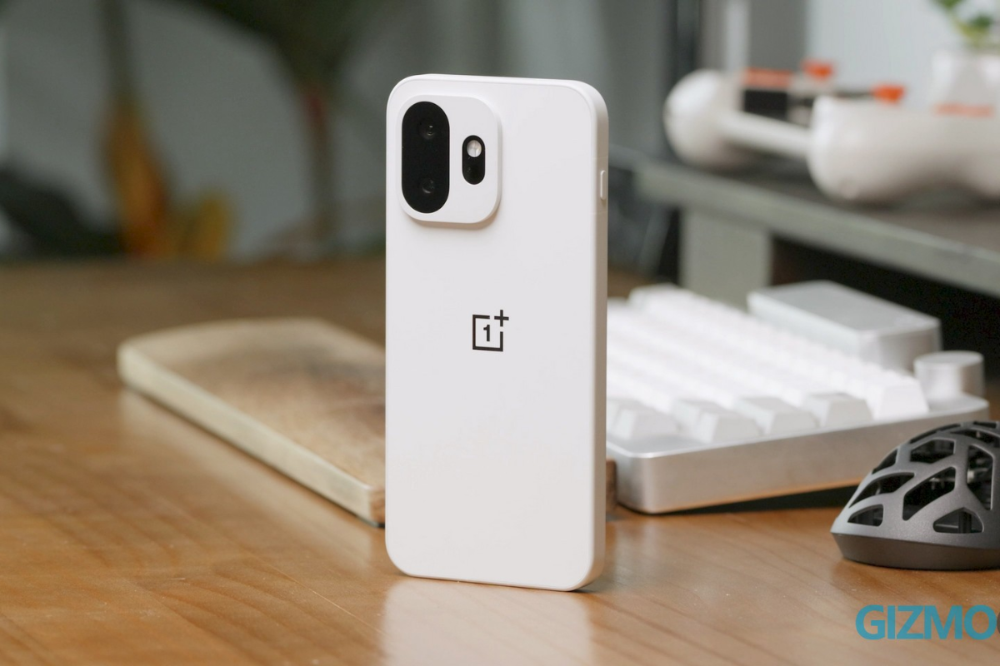
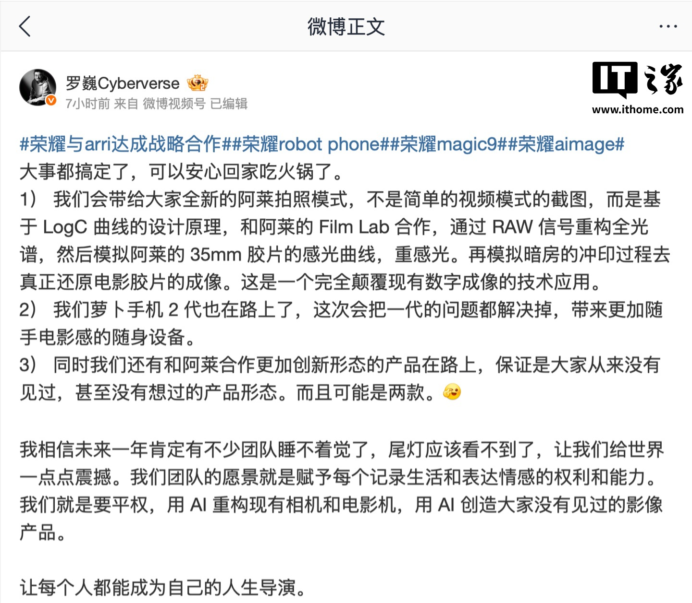
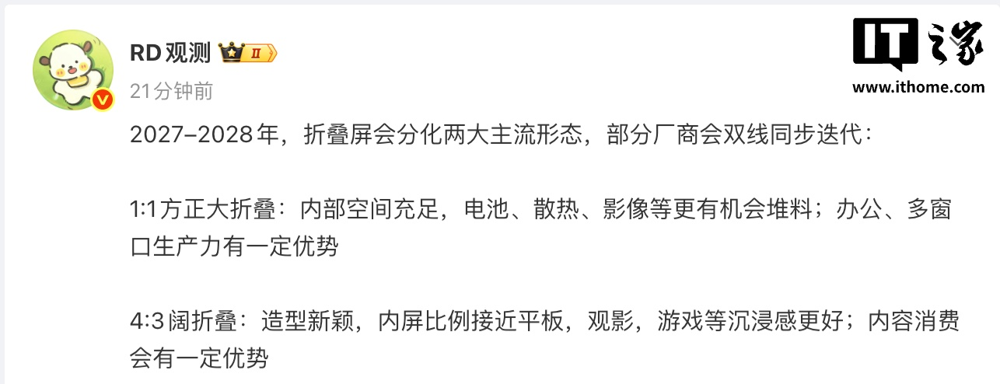
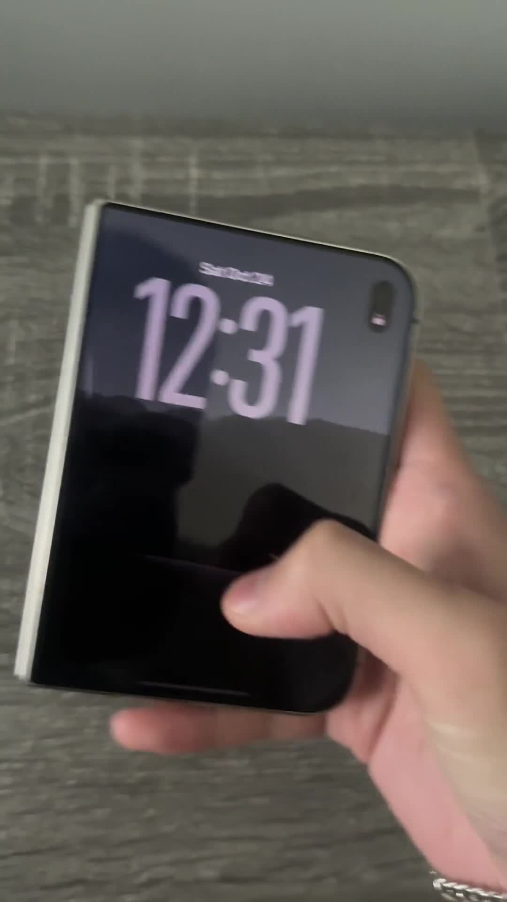
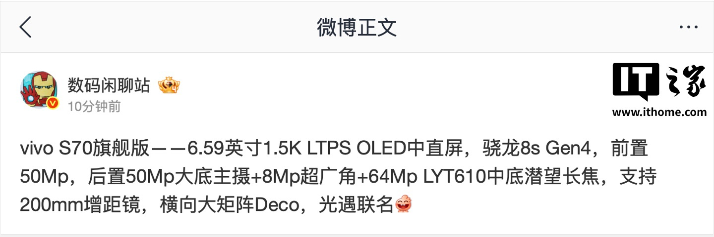
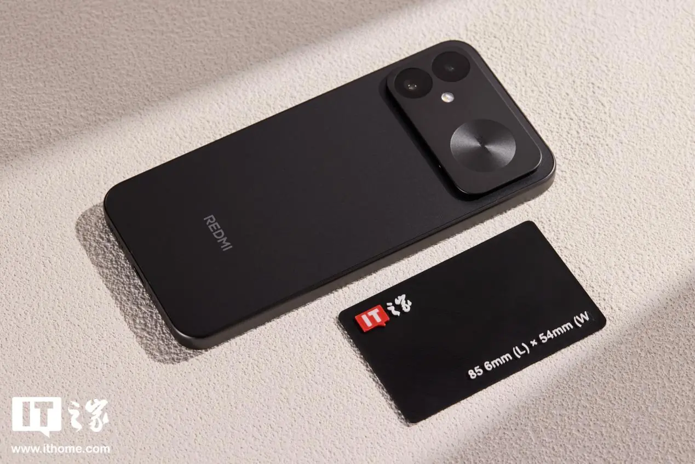
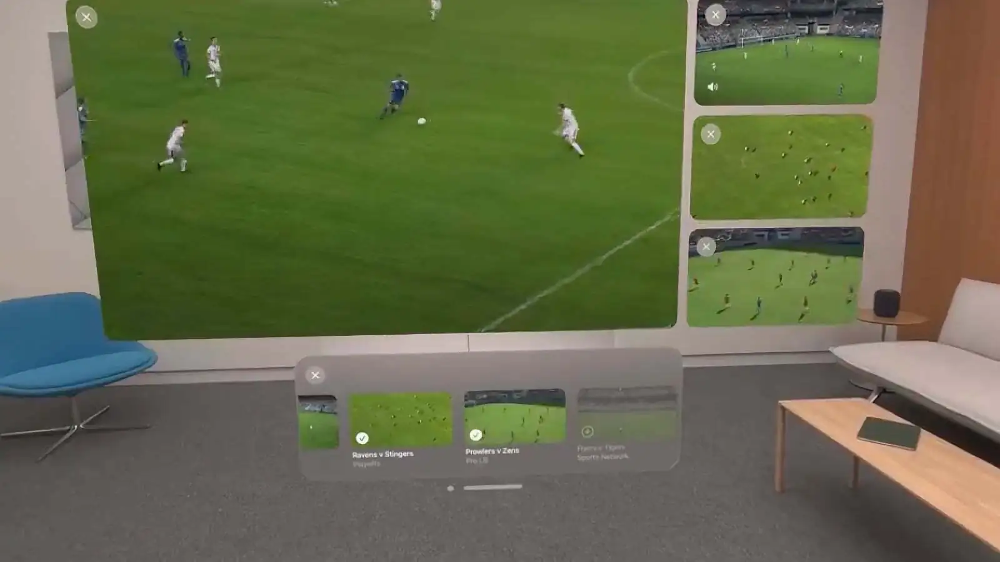
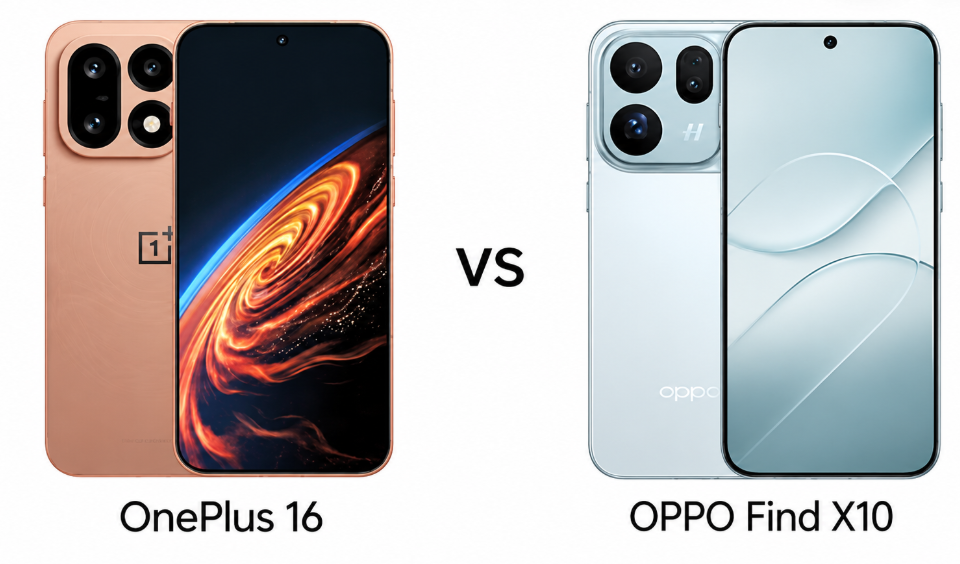
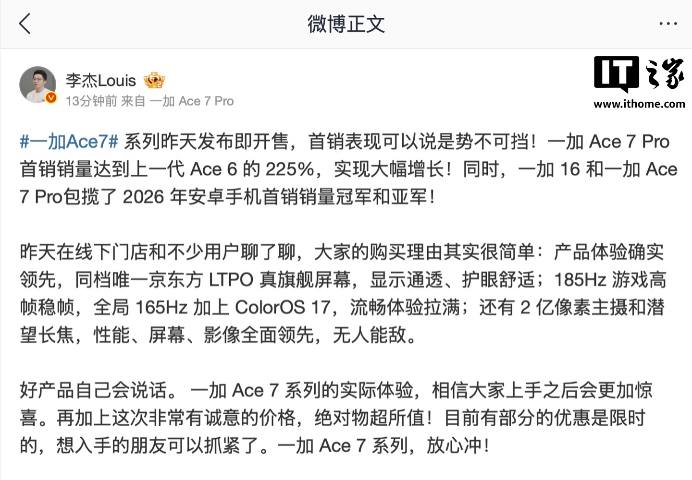

THE TECH EDIT
기술의 변화, 매일 한눈에.
카메라 · 스마트폰 · AI, 해외 테크 소식을 모아 전합니다.
최근 발행2026-11-01
새로 들어온 소식
LATEST STORIES

최신 뉴스
전체 4,057개 기사삼성, 내년에 언더 디스플레이 카메라 다시 선보인다
Samsung, Apple 첫 폴더블 아이폰 Duo 조롱: 폴더블 디스플레이는 우리가 경험이 풍부하다

RedMagic 12 Pro+ vs OnePlus 16: 전용 게이밍 팬 vs 200MP 카메라

OnePlus, 향후 새로운 소형 스마트폰 출시하지 않을 수도
iPhone 17, 징둥에서 4,990위안, 11.11 자영 PLUS 보조금 적용 후 5천 위안 돌파

Huawei Pura 90 Plus 스마트폰 출시: 1인치 메인 카메라, Kirin 9025 최초 탑재, 5199위안부터 할인 판매

Huawei 창샹 100 시리즈 스마트폰 첫 판매: 기린 8000S/8020A/8020 프로세서, 1,399위안부터

Honor 로웨이: 완전히 새로운 ARRI 촬영 모드를 선보일 것이며, 단순한 비디오 모드 스크린샷이 아니다

폴더블 디스플레이 스마트폰, 내년부터 대형 폴더블과 와이드 폴더블 두 가지 주류 형태로 분화될 전망, 일부 제조사는 두 라인 동시 개발

세계 최초 AI 전동 드라이버: 홍콩 Arrowmax, 카메라로 나사 유형 식별하는 S1 출시

네티즌이 공유한 Apple iPhone Duo 팁: 검지 두 번째 마디 지문을 등록하면 스마트폰을 들자마자 자연스럽게 잠금 해제

Apple, 매장 내 iPhone Duo 내부 디스플레이 균열 수리/교체 표준 절차 지침 하달
AI를 위한 AI는 없다: Apple CEO 테르누스의 제품 선언, AI는 경험 속에 숨겨져야 한다

vivo S70 플래그십 스마트폰 사양 유출: 스냅드래곤 8s Gen4 탑재, 200mm 텔레컨버터 지원

시그마 50-120mm F2.8 DC OS APS-C 망원 줌 렌즈, 중국 출시 가격 4,999위안

Redmi K100 스마트폰 사용 후기: 듀얼 칩 성능이 예상보다 뛰어나고, 배터리 사용 시간에 더 중점을 뒀다

주머니 속 스포츠 라이브 제어 콘솔: Apple iPhone Duo 등 4분할 화면으로 경기 시청 지원
OPPO의 6.35인치 바 타입 스마트폰, 내년 첫 신제품은 하이엔드 플래그십 라인, 이후 경량 카메라 스마트폰으로 확대 고려
OPPO 고위 임원 새 분장: 리빙중 해외 시장 총괄, 인원광 스마트폰 제품 총괄

OnePlus 16 vs OPPO Find X10: 스냅드래곤 성능인가, 200MP 카메라 성능인가?

이재: OnePlus 16과 OnePlus Ace 7 Pro, 2026년 안드로이드 스마트폰 첫 판매량 1위와 2위 석권
검색 결과가 없습니다
다른 검색어를 입력하거나 필터를 초기화해 보세요.